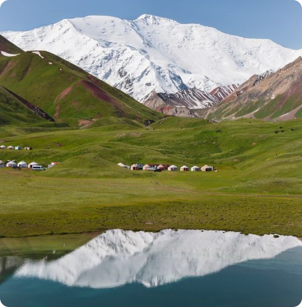

Мы поможем вам насладиться замечательным отдыхом в юрте с семьей.
Вашим домом на несколько дней станет юрта, а вместо привычного завтрака и обеда вы будете
пробовать кумыс, свежеприготовленные лепешки и кусочки жареной баранины — именно такую еду
употребляют местные жители.
И если вам не понравится рацион, то звездное небо в горах точно не оставит равнодушным. Можно
покататься на лошадях, если умеете держаться в седле.

Галерея
Абдиев А.
Август 2020
Здравствуйте дорогие мои друзья! В этой строке отзывов я хочу написать о своих ощущениях в походе из
ущ.Чункурчак в ущ.Бирбулак (Малиновое). Туда я пошла с группой собранным "Союз пешеходного туризма
Кыргызстана" и гидом предоставленным фирмой. По началу мне казалось не таким уж и интересным,но....
когда мы перевалили первый перевал (!) я поняла что все интересное только начинается,так как
открылся прекраснейший вид на все горы нашей родины!